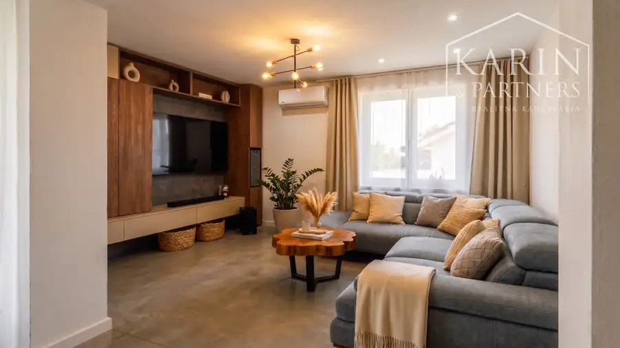
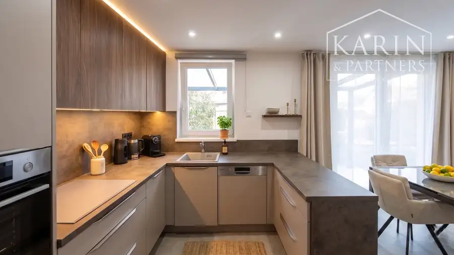
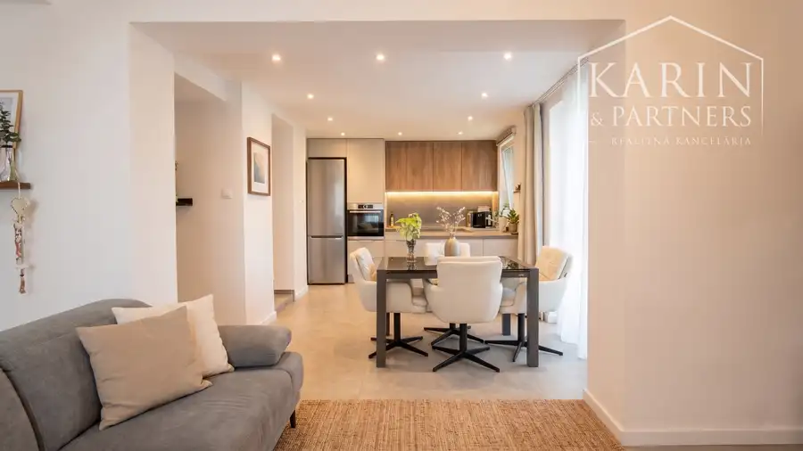
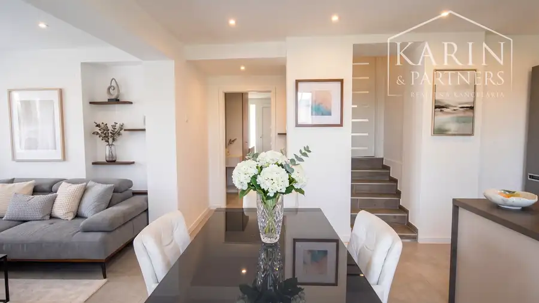
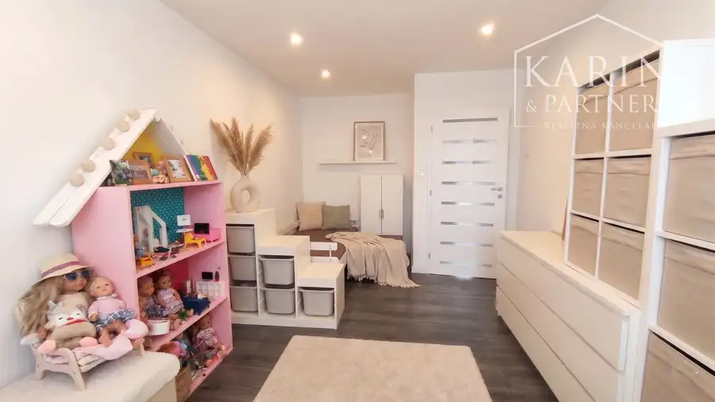
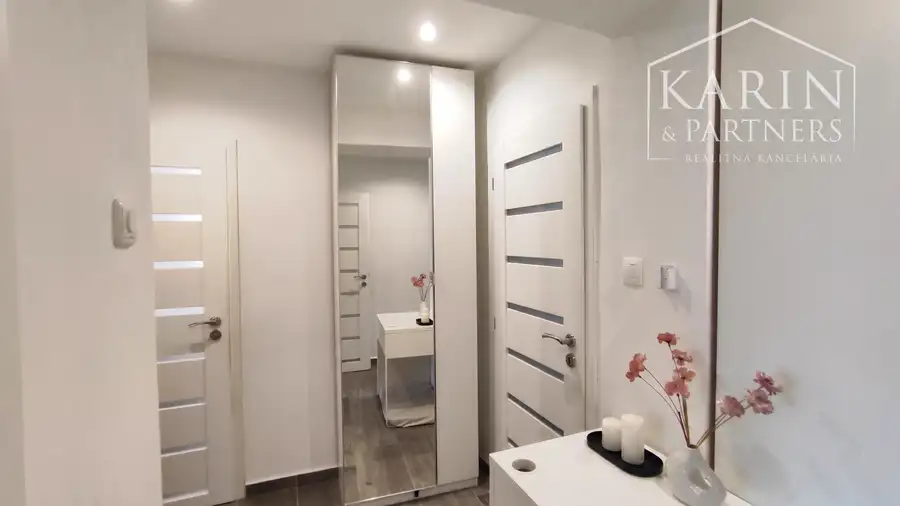
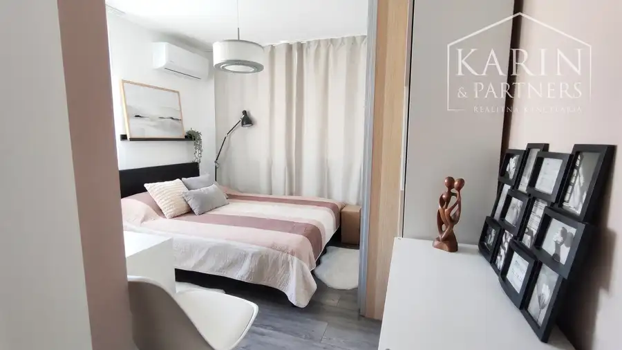

Rodinný dom 3+1izbový, Kompletná rekonštrukcia, bazén, garáž
Palárikovo







- Plocha122 m²
- StavKompletná rekonštrukcia
- VlastníctvoOsobné
O nehnuteľnosti
RD NA PREDAJ: Kompletne zrekonštruovaný rodinný dom s garážou, bazénom na krásnom slnečnom pozemku v obci Palárikovo .ZÁKLADNÉ ÚDAJE o nehnuteľnosti:- Výmera pozemku 616 m2- Zastavaná plocha 125m2- Úžitková plocha je 107 m2 + terasa cca.19m2- Výmerou, detailnými záhradnými úpravami ideálny rekreačný, slnečný a rovinatý pozemok s kompletnými okrasnými a terénnymi úpravami, príčom celý pozemok je oplotený- Kľudné a tiché prostredie a bezproblémoví susedia v okolí- Nehnuteľnosť po kompletnej rekonštrukcii, nové hliníkové oknáDISPOZIČNÉ RIEŠENE:VYVÝŠENÉ PRÍZEMIE: 3izby + kuchyňaRodinný dom má vyvýšené prízemie sprístupnené cez schody do predsiene, z ktorej je cez chodbu riešený vstup do izby, ďalej vstup do dennej časti (obývacia izba + kuchyňa) a vstup do kúpeľne spojenej s WC. Z dennej časti sa vstupuje po zopár schodíkoch do detskej izby a tiež do obývacej izby, ktorá je spojená s kuchyňou. Z kuchyne je východ na terasu o rozmeroch cca 6x3m. Z terasy v zadnej časti domu sa vychádza cez schody na ideálny slnečný pozemok, na zadnú časť dvora, v ktorom dominuje na vyvýšenej ploche s výmerou cca.50m2, bázen s rozmermi cca. 5mx3m. K bazénu patrí aj skladacia konštrukcia prekrytia, na vodiacich kolajniciach. Táto vyvýšená plocha okolo bazenú je obložená kvalitným prírodným travertínovým kameňom. SUTERÉN: 1izby + práčovňa + skladový priestor Dom je kompletne podpivničený. V pivnici sa nachádza viacero skladových miestností a práčovňa. RD má teda v časti vyvýšeného prízemia sumárne 3izby + kuchyňu. V prednej časti domu v suteréne je jedna miestnosť cca.20m2, ktorú je možné po úprave využiť na rôzne účely, nakoľko má samostaný prístup, so samostatným meraním elektriny. Táto miestnosť má potenciál na rôzne spôsoby využitia, napríklad na prenájom, na samostatné viacgeneračné užívanie, alebo tiež aj na využitie priestoru na podnikanie, či už na sklad, alebo napr. ako prenájom kancelárie.TECHNICKĚ INFORMÁCIE: - Dvojpodlažný kompletne zrekonštruovaný rodinný dom- Rovná strecha - Kompletne zateplená fasáda - IS: elektrina, voda, žumpa- celopodpivničený dom - kompletne nové plastové okná INCON a terasové dvere s izolačným trojsklom- kúrenie je podlahové cez elektrický kotol so samostatnou reguláciou pre každú izbu- 3 x klimatizácia- teplá voda je zabezpečená bojlerom- kuchymská linka na mieru, vstavané spotrebiče: elektrická varná doska, digestor, elektrická rúra.ĎAĽSIE INFORMÁCIE:- Bazén s travertínovým obložením, so skladacím prekrytím s posuvom, tepelné čerpadlo na ohrev bazéna- Garáž v zadnej časti pozemku - kompletné terénne a záhradnícke úpravy - zámková dlažba okolo domu- LOKALITA, len 5 minút od mesta Nových ZámkovMesačné náklady na komplet aj s ohrevom vody a vykurovaním cca.190€Dom má príjemnú atmosféru na bývanie, oddych, s prípravou na prácu z domu, ale aj relax na slnečnom a rovinatom pozemku s ideálnou rekreačnou výmerou 616m2. Priateľskí a bezproblémoví susedia sú základným predpokladom na spokojné bývanie, kde dom s peknou prekrytou terasou cca. 19m2, ponúka ideálne možnosti na relax, letné grilovanie, oddych a posedenie s kávičkou.CENA: Info v RKV cene sú zahrnuté komplexné služby RK vrátane právneho servisu – vypracovanie všetkých druhov zmlúv potrebných k predaju a štandardných poplatkov spojených s predajom.V prípade viacerých záujemcov si majiteľ vyhradzuje právo zvoliť najvýhodnejšiu ponuku.Možnosť financovania hypotekárnym úverom – s vybavením Vám radi pomôžeme.Všetky fotky, texty, fotodokumentácie a vizualizácie nehnuteľnosti sú autorským dielom a majetkom sprostredkovateľa f.KARINPARTNERS s.r.o. KONTAKT A OBHLIADKY:Ing. Ľubomír Klučiar+421 905 854 286kluciar.l@karinpartners.sk
Parametre
- Druh
- Rodinný dom
- Dátum zverejnenia
- 27. 05. 2026
- Plocha pozemku
- 616 m²
- Plocha terasy v m2
- 18 m²
- Počet izieb / miestností
- 4
- Stav nehnuteľnosti
- Kompletná rekonštrukcia
- Terén pozemku
- Rovinatý
- Typ
- Predaj
- Typ konštrukcie
- Tehlová
- Vlastníctvo
- Osobné
- Vybavenie
- Terasa, Pivnica
- Zastavaná plocha
- 125 m²
- Úžitková plocha
- 122 m²